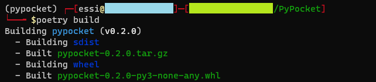
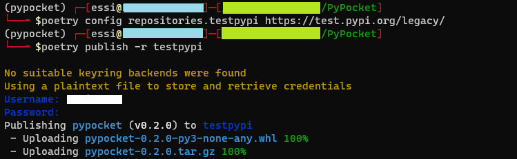
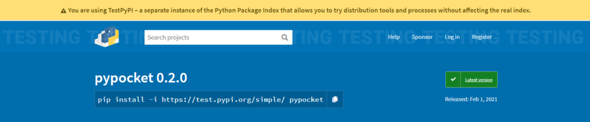

👉 This article is also published on Towards Data Science blog.
Packaging your Python library has never been easier now using Poetry. You may have a side project in Python that benefits others. You can publish it using Poetry. This post will show you how to build your own Python library and publish it on the most popular Python package repository PyPI.
I will use one of my recent Python projects, PyPocket: a Python library (wrapper) for Pocket (previously known as Read It Later).
Prerequisite
1. Project environment
You need to have your project environment managed in Poetry since we will be using the pyproject.toml file to build our package and publish it.
2. Package repository
We will need a package repository to host the Python package; the most popular one is PyPI. So, if you want to publish your library on PyPI, you need to first create an account on PyPI.
Packaging Instructions
Step 1: Build your package
Once you have your Python package ready to be published, you first need to build your package using the following command from the directory that contains the pyproject.toml file:
poetry build
poetry buildThe above command will create two files in the dist (distribution) directory. A folder will be created if there is no dist folder.
First, a source distribution (often known as sdist) is created that is an archive of your package based on the current platform (.tar.gz for Unix and .zip for Windows systems)1.
In addition to sdist, poetry build creates a Python wheel (.whl) file. In a nutshell, a Python wheel is a ready-to-install format allowing you to skip the build stage, unlike the source distribution. A wheel filename is usually in the following format2:
{pkg-name}-{pkg-version}(-{build}?)-{python-implementation}-{application binary interface}-{platform}.whlFrom the above figure, the package I built is called pypocket with version 0.2.0 in Python 3 that is not OS-specific (none ABI) and suitable to run on any processor architecture.
Step 2: Publish your package
Once the package is built, you can publish it on PyPI (or other package repositories).
Once you publish your package to PyPI, you will not be able to release an identical version (you can delete the package, but when trying to republish with the same version, you will get an error! I’ve been there). Hence, it’s recommended to test any package before pushing it to PyPI.
Test Your Package on TestPyPI
It’s a good idea to first publish your package using the TestPyPI framework. This way, if there is an issue with the published package, you can fix it and then publish it on PyPI. TestPyPI has an identical setup and user interface as PyPI, but it’s a separate framework. So, you need to create an account on TestPyPI too.
Now, let’s publish our package on TestPyPI. First, add TestPyPI as an alternative package repository using the following command.
poetry config repositories.testpypi https://test.pypi.org/legacy/You can publish your package to TestPyPI as the following:
poetry publish -r testpypi
poetry publish will ask for your username and password (you can also use a token instead, more on this later). Notice that both the source distribution (.tar.gz) and the Python wheel are uploaded. Once the package is published, you should see something like the following on TestPyPI.

You can check that here https://test.pypi.org/project/pypocket/
As can be seen from the above screenshot, you can install the package pip install -i https://test.pypi.org/simple/ pypocket and test it.
Publish Package on PyPI
Once you’re happy with your Python library, you can publish it on PyPI using the following command:
poetry publishNote that by default, Poetry publishes a package to PyPI. Therefore, you do not need to do poetry config or pass any argument to poetry publish.
A point on using API Token instead of username and password
You may notice that I’ve used my username and password when trying to publish the package. I would recommend using a token instead. You may have multiple projects in your PyPI account, and you can generate an API token for each project (package). This is particularly important if you want to automate your python packaging not to use your username and password during automated deployments. Another advantage of using an API token is that you can easily remove a token and even generate multiple tokens for a project.
You can generate an API token by going to Account settings of your PyPI (or TestPyPI) account and then add an API token under the API tokens section. You will then be prompted to select a scope for your token (to use the token for a particular project or all your PyPI projects). The instruction to use the token will also be provided at this stage.
Conclusion
In this post we saw how we can build and publish a Python package using Poetry in two simple commands: poetry build and then poetry publish. We also went through the TestPyPI framework in order to test the Python package before publishing it on PyPI.
Useful Links
Introduction | Documentation | Poetry - Python dependency management and packaging made easy.
Footnotes
Learn more about the Source Distribution: Python documentation: Creating a Source Distribution↩︎
Brad Solomon (2020), What Are Python Wheels and Why Should You Care?, Real Python↩︎
Citation
@online{alizadeh2021,
author = {Esmaeil Alizadeh},
title = {How to {Publish} {Your} {Python} {Package} with Just 2
Commands},
date = {2021-02-08},
url = {https://new.ealizadeh.com/blog/how-to-publish-your-python-package-with-just-2-commands},
langid = {en}
}